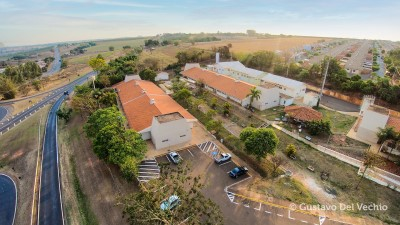
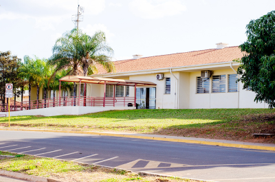
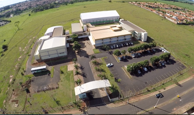
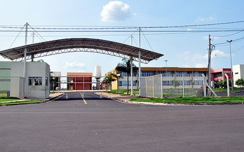

Sobre
Olá, meu nome é Wagner Cesar Vieira
Sou Tecnólogo em Processamentos de Dados pela Fatec Taquaritinga
 Especialista em docência para a educação profissional e tecnológica pelo Instituto Federal de São Paulo - campus Barretos
 Experiência
Com um pouco mais de 20 anos de experiência na área de tecnologia, realizando treinamentos e suporte ao usuário em sistemas, manutenção de computadores, administração de redes, linguagens de programação Delphi, Javascript, PHP e Python e ferramentas de cloud da AWS. Desde 2007, atuo como professor de ensino médio e técnico, onde participei de bons desafios profissionais, como a implantação de um sistema acadêmico para uma secretaria acadêmica em 2011 e treinamento para 80 colaboradores, coordenação de curso técnico em 2009 e 2021, além da gestão dos laboratórios de informática e administração da rede.
Resumo
Wagner Cesar Vieira
Professor de ensino médio e técnico em cursos na área de tecnologia, abordando desde os conceitos iniciais de programação, manutenção de computadores e adminstração de redes.
- Rua Lúcio Sarti, 809 - Bebedouro - SP
- (17) 99681-9905
- vieira.wagner@aluno.ifsp.edu.br
Formação
Especialista em desenvolvimento de sistemas para internet e dispositivos móveis
2022 - 2023
Instituto Federal de São Paulo, campus de Barretos, SP
O curso de pós-graduação lato sensu em Desenvolvimento de Sistemas para Internet e Dispositivos Móveis tem como objetivo o aperfeiçoamento das competências profissionais na área da computação, preparando os discentes para o mercado de trabalho, despertando o entendimento sobre a utilização da tecnologia da área da computação no desenvolvimento de problemas do dia a dia.
Especialista em docência do ensino profissional e tecnológico
2021 - 2022
Instituto Federal de São Paulo, campus de Barretos, SP
O Curso de Especialização Lato Sensu em Docência para a Educação Profissional e Tecnológica objetiva capacitar profissionais da educação para lecionar nas ofertas da Educação Profissional, estimular a produção e difusão de conhecimento sobre a Educação Profissional como campo de estudos; e promover a Educação a Distância como estratégia educativa, especialmente na Educação Profissional.
Tecnólogo em Processamento de dados
1994 - 1998
Faculdade de Tecnologia de Taquaritinga, SP
Experiência Profissional
Professor de ensino médio e técnico
2007 - Present
Escola Técnica Estadual Prof. Idio Zucchi, Bebedouro, SP
Atuação na área docente em componentes curriculares como Instalação e Manutenção de Computadores, Gestão de Sistemas Operacionais (Windows Server, Linux), Bancos de Dados (MySQL, SQL Server), Redes de Computadores, Lógica de Programação, Programação Web (PHP), Análise e Projeto de Sistemas (UML), Técnicas de Programação (Delphi e Java), Sistemas Embarcados (Arduino).
Analista de suporte
2020 - 2021
NetSolutions - Soluções em Informática, Colina, SP
Atuação como analista de suporte no atendimento de solicitações (tickets) de equipes de desenvolvimento de projetos em Delphi 7 e Delphi 10, realizando a verificação, compilação e implantação (deploy) de versões de aplicação no mercado interno (Brasil) e externo (América Latina).
Encarregado de CPD
2005 - 2008
Monteauto Veículos Ltda - Concessionária VW, Monte Alto, SP
Executava a manutenção preventiva e corretiva dos 30 ativos da empresa, incluindo impressoras, terminais de consulta e equipamentos de rede, além da administração de usuários e atualização da base de dados local (Informix) e do sistema legado (Sistema Sisdia – atual Linx DMS Sisdia), além do tratamento e conversão de dados e disponibilização de relatórios à diretoria da concessionária.
Portfolio
Nesta seção, vamos abordar um pouco das tecnologias que gosto de participar e desenvolver projetos.

Contato
Se quiser falar sobre tecnologias e como eslas podem ajudar as pessoas, entre em contato.
Endereço:
Av. C Um, 250, Barretos - SP, 14.781-502
Email:
vieira.wagner@aluno.ifsp.edu.br
Telefone:
+55 17 3312-0700